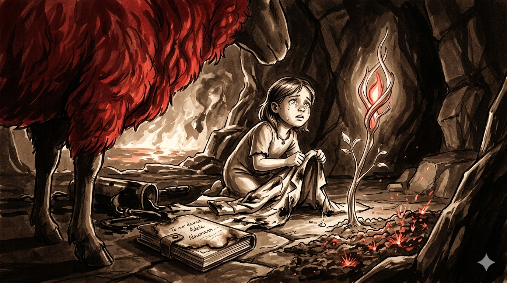

Author: Rex
In a room that felt more like a laboratory than a home, a woman studied a heap of soil with meticulous care, blending it with brightly colored reagents. Sometimes she would be fully concentrating on operating all kinds of instruments; sometimes she would just quietly gaze at the fiery red soil, as if trying to uncover the hidden secrets within the volcano.
At the edge of the workbench stood a little girl. Still too small to see the tabletop clearly, she watched her mother in silence. In her eyes, the soil shimmered with tiny, warm red sparks. Her father entered the room. “My class is over,” he said. “We should go.” The woman carefully packed away her tools and the soil sample, then turned to her daughter, who had returned to the small desk in the corner with a book. “Adele,” she said gently, “your father and I are going out to collect samples. We’ll be back soon. Stay home, and don’t wander off, alright?” Adele nodded. She was used to their departures. She knew they were renowned volcanologists and dreamed of becoming one herself. She didn’t know this would be the last time she would ever see them. The volcano erupted without mercy. Lava surged over the mountain like a living tide, incinerating plants and claiming the lives of two exceptional scientists. Their colleagues told Adele the truth. They knew she was a resilient child. Upon hearing the news, she did not scream. Only two searing tears ran down her cheeks, hot as magma, soaking the pages of her open book. For the next ten years, she lived alone in that house, studying with fierce determination. She pored over her parents’ books and notes until their handwriting felt like living memory. By the age most began university, Adele had already become a leading figure in volcanology. Still, she never found the glowing red soil of her childhood, no matter how many expeditions she led. One day, during a routine survey, an unnatural wind rose, filling the air with blinding ash. Her protective gear kept her breathing steady, but the world dissolved into gray chaos. Disoriented, Adele felt a quiet, familiar pull guiding her forward. It led her to a cave she had never seen. Deeper inside, she found it at last — the same faintly glowing soil, now carpeted with vivid fire-red grasses and flowers. Overjoyed, she knelt to examine them. A warm voice echoed from the depths of the cave. “What an adorable young lady!” Adele’s heart jolted. Swallowing her fear, she moved toward the sound. Beside a lake of molten lava lounged a massive sheep with blazing crimson fleece. It carried an air of ancient, lazy authority. “So their child has grown this big already,” it murmured. Noticing her shock, the sheep tilted its head. “Oh? You can actually see me? Then allow me to introduce myself. I am the Lord of Sheep. You may call me Dolly.” (Dolly was a Beast Lord — an existence of mysterious power and extraordinary intelligence.) “Mr. Dolly… did you know my parents?” Adele asked. “I did,” he replied softly. “They were remarkable volcanologists. When the eruption began, they were here studying these plants—They turn to ash the moment they leave this mountain. I tried to protect them… but I failed.” He nodded toward a shadowed corner. There lay the remnants of her parents: two half-charred coats and blackened equipment. Adele knelt before them. As her fingers traced the scorched fabric, years of suppressed grief finally broke free. She cried — raw, helpless sobs that belonged to the little girl she once was. When the tears finally quieted, she began gathering the relics. Between the coats she found a notebook, and inside it, a letter written on fireproof paper. To our dearest Adele Naumann, If you’re reading this, the mountain has taken us. We knew the risks. Volcanoes are both beautiful and cruel, so we wrote this letter long ago. We are sorry we won’t be there to watch you grow. That regret is the one thing we cannot change. But we believe in you. You have always been quietly strong, kinder than you show, and braver than any child should need to be. You will survive this. You will grow. One day you will choose your own path. Whether you follow our footsteps into the fire or walk an entirely different road, both choices are right — as long as they are yours. Do not live inside your grief. Mourn if you must, but then look forward. Eat well. Sleep when you can. Let others help you. And when the world feels cold, remember this: you were loved, completely and without condition. Wherever you go, our love goes with you. With all our love, Mom and Dad As Adele finished reading, fresh tears fell. One drop struck the cave floor. From that spot, a sapling pushed through the stone, growing rapidly until it shaped itself into a elegant staff. A warm, flame-red glow pulsed within its core. Dolly spoke gently. “It seems this is the final gift they left for you. Treasure it.” Adele pulled the staff free and clutched it tightly to her chest. Years later, stories began to spread of a formidable caster who wandered between volcanoes. Her name was Eyjafjalla — the name of the volcano that had taken her parents and given her a new destiny.